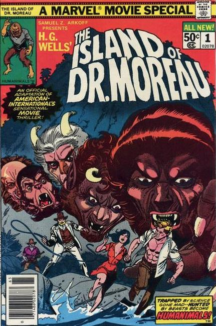

The Island of Dr. Moreau is a 1977 science fiction film, and is the second English-language adaptation of the H. G. Wells novel of the same name, a story of a scientist who attempts to convert animals into human beings. The film stars Burt Lancaster, Michael York, Nigel Davenport, Barbara Carrera and Richard Basehart, and is directed by Don Taylor.
This movie is the second in A.I.P.'s H.G. Wells film cycle, which includes The Food of the Gods (1976) and Empire of the Ants (1977).

Series: one shot 1977 movie adaptation
Publisher: Marvel
Written by Doug Moench
Illustrations by Larry Hama, Jess Jodloman
A Marvel Movie Special, based on the 1977 feature film. "The Island of Dr. Moreau,"
Cast adrift for days on a lifeboat, Andrew Braddock finally finds land; But his triumph soon turns into a nightmare as he finds himself trapped on an island by a mad scientist named Dr. Moreau and hunted by beasts that are part human-part animal. The Island of Dr. Moreau: Film of a Thousand Faces!